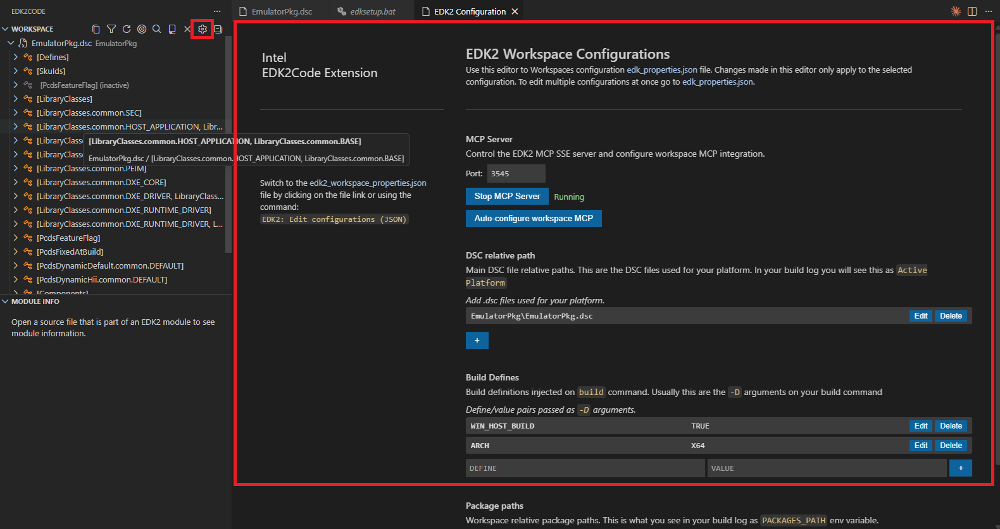

Workspace settings
The workspace configuration controls which DSC files, build defines, and package paths the extension uses when parsing your EDK2 project.
Configuration UI
The easiest way to manage the workspace settings is through the graphical configuration panel. Open it from the Workspace view title bar ($(gear) icon) or via the command palette:
> EDK2: Workspace configuration (UI)

The panel lets you set:
- DSC paths — the main
.dscfiles for your platform (relative to the workspace root). - Build Defines — definitions injected in your build command with
-D(e.g.ARCH=X64). - Package paths — additional package roots passed to the EDK2 build.
Configuration file
The settings are stored in .edkCode/edk2_workspace_properties.json inside your workspace. You can also edit this file directly or open it with:
> EDK2: Workspace configuration (JSON)
{
"packagePaths": [],
"dscPaths": [
"OvmfPkg\\OvmfPkgX64.dsc"
],
"buildDefines": [
"ARCH=X64"
]
}
dscPaths — Each entry should be a main DSC file used for compilation.
buildDefines — Definitions injected in your build command with -D. Add or modify entries to match your build.
After any modification to this file, VS Code will prompt you to reload the index.